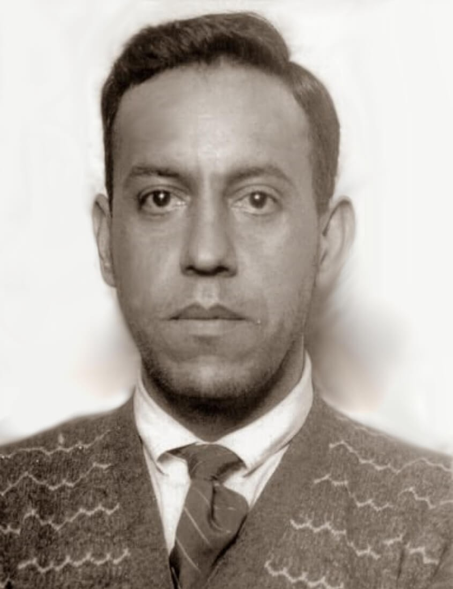
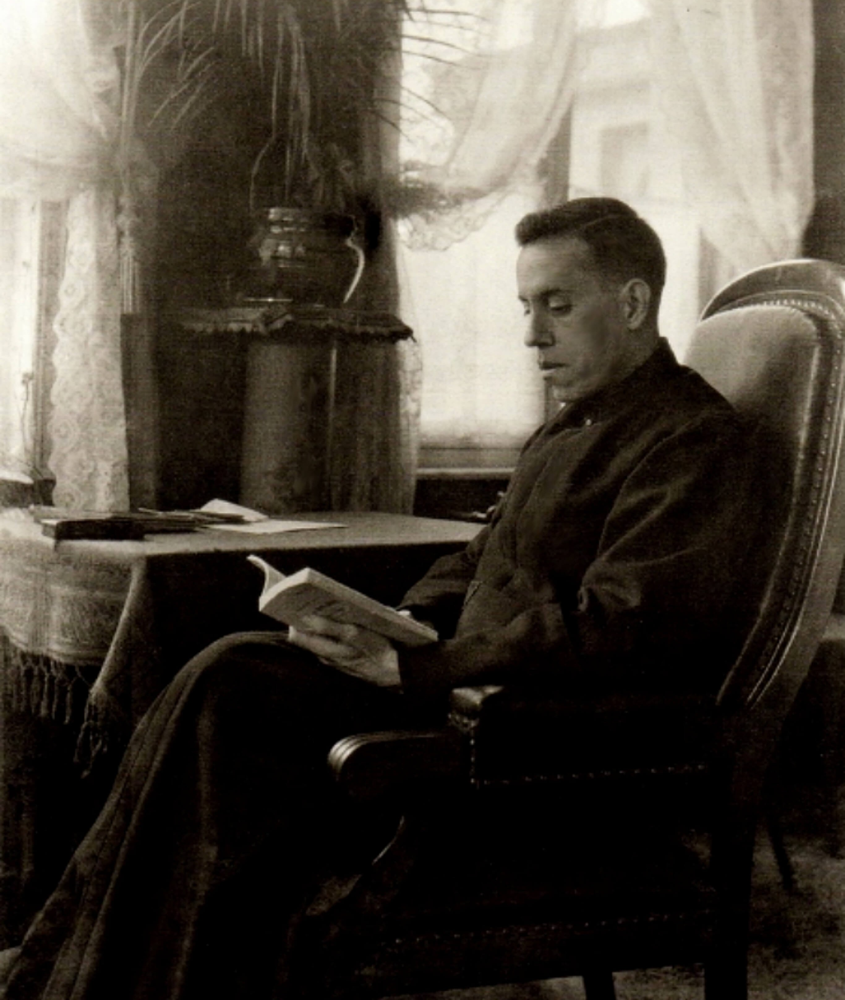
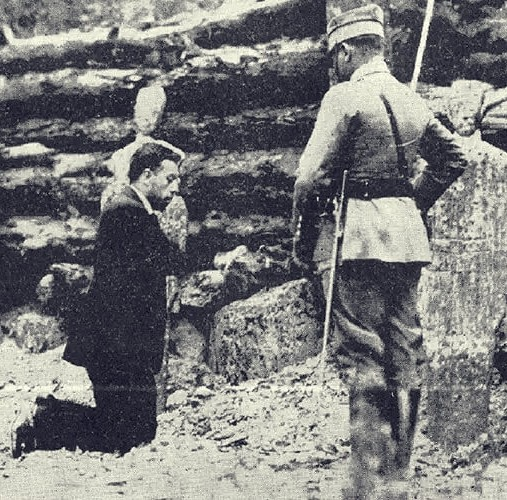
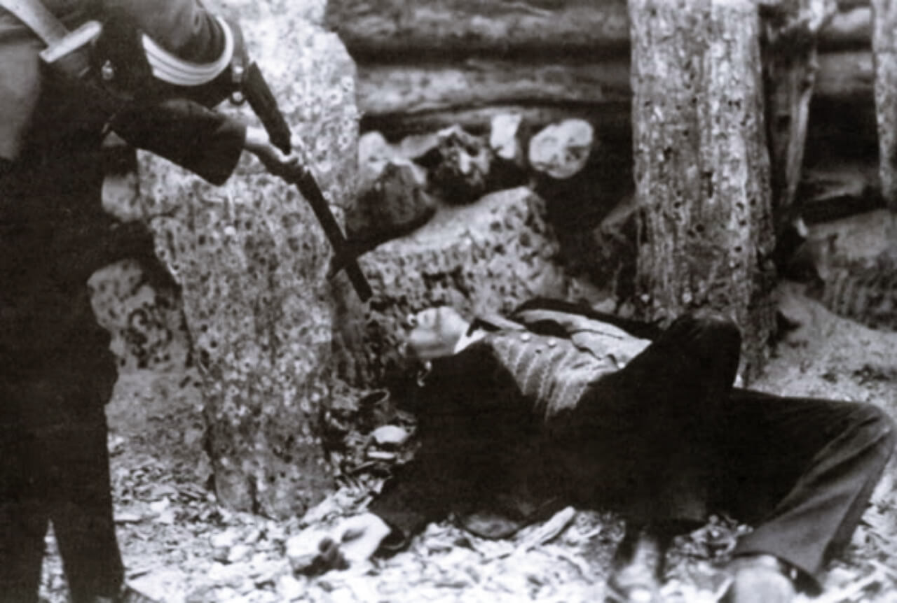
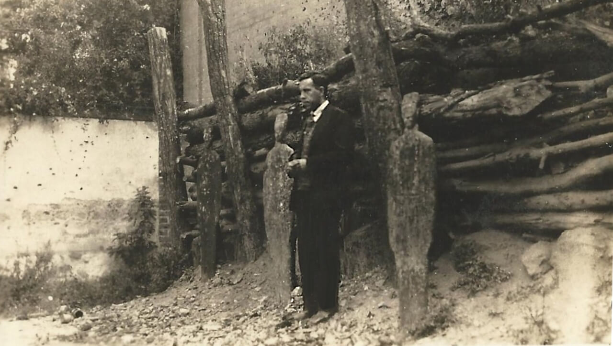

"Viva Cristo Rey!" — O padre disfarçado que desafiou a ditadura mexicana
"Viva Cristo Rey!" — Últimas palavras antes do fuzilamento, 23 de novembro de 1927
José Ramón Miguel Agustín Pro Juárez nasceu em 13 de janeiro de 1891 em Guadalupe, próximo a Zacatecas, no norte do México, numa família numerosa e profundamente católica. Seu pai era engenheiro de minas — o que levou a família a se mudar frequentemente pelas regiões mineiras do México, expondo o jovem Miguel desde cedo à dura realidade dos trabalhadores pobres das minas.
Miguel cresceu como um jovem alegre, bem-humorado, com talento natural para a comédia e para o disfarce — características que décadas depois se revelariam providenciais. Era conhecido entre os amigos por suas imitações, suas peças teatrais improvisadas e sua capacidade de fazer qualquer pessoa rir. Mas sob essa alegria vibrante havia uma fé profunda e um coração genuinamente compassivo pelos pobres.
Quando suas duas irmãs mais velhas entraram para a vida religiosa, Miguel sentiu a ausência de algo que não conseguia nomear. A mãe o convidou para um retiro espiritual — e foi ali, em silêncio e oração, que o jovem de 20 anos descobriu que sua vocação era o sacerdócio jesuíta.
Em 1911, Miguel ingressou no noviciado da Companhia de Jesus. Mas o México entrava num período de convulsão política sem precedentes — a Revolução Mexicana (1910-1920) havia derrubado a ditadura de Porfírio Díaz e instalado um governo crescentemente hostil à Igreja Católica. Em 1914, à medida que a perseguição religiosa se intensificava, Miguel e seus companheiros jesuítas foram forçados a abandonar o México e continuar a formação no exílio.
Estudou nos Estados Unidos, depois na Espanha e finalmente na Bélgica, onde foi ordenado sacerdote em 31 de agosto de 1925. Durante os anos de formação, sofreu de problemas graves de saúde — úlceras estomacais que o acompanhariam pelo resto da vida e que exigiram cirurgias. Era um homem fisicamente frágil, mas de energia e determinação inexauríveis.
Nos anos na Europa, aprofundou seu amor pelos trabalhadores pobres — influenciado pela Doutrina Social da Igreja e pelo contato com os operários belgas e espanhóis. Escrevia cartas longas e divertidas para a família no México, cheias de piadas e sketches cômicos, que hoje são tesouros do seu espírito inconfundível.
Quando Miguel retornou ao México em julho de 1926, a situação havia se deteriorado drasticamente. O presidente Plutarco Elías Calles havia promulgado a chamada Lei Calles — um conjunto de regulamentos que efetivamente criminalizava o exercício público da religião católica: proibiu missas públicas, fechou igrejas, expulsou ordens religiosas, proibiu sacerdotes de usar hábito ou qualquer sinal externo de identidade clerical, e tornou ilegal qualquer ensino religioso.
A resposta popular foi a Guerra Cristera (1926-1929) — um levante armado de camponeses e agricultores católicos no centro-oeste do México, sob o grito de guerra "Viva Cristo Rey! Viva a Virgem de Guadalupe!" O governo respondeu com brutalidade.
Nesse contexto, Miguel Pro iniciou um ministério que não tinha precedente na história moderna da Igreja mexicana: exercer todos os sacramentos na clandestinidade total, como os primeiros cristãos nas catacumbas de Roma.
O que Miguel Pro fez nos quinze meses seguintes seria material suficiente para um romance de espionagem — não fosse tudo absolutamente verdadeiro, documentado por testemunhas e pelo próprio governo que tentava capturá-lo.
Usando disfarces que incluíam roupas de operário, uniforme de motorista, traje de mendigo, roupa de polícia e até de noivo num casamento fictício, Miguel circulava pela Cidade do México celebrando Missas em garagens, apartamentos e porões, ouvindo confissões em banheiros, distribuindo comunhão a doentes em hospitais, batizando crianças em cozinhas e casando casais em quintais. Organizou estações secretas de comunhão que nos primeiros dias de cada mês reuniam mais de 1.200 fiéis.
Era perseguido ativamente pela polícia — e repetidamente escapava em circunstâncias que beiravam o milagre e o humor. Certa vez, sendo seguido por policiais num táxi, pediu ao motorista que continuasse enquanto ele se jogava em movimento para a calçada e começou a caminhar cambaleando como bêbado, enganando os agentes que passaram por ele sem reconhecê-lo.
Outra vez, saiu de um apartamento onde havia celebrado Missa instantes antes de a polícia chegar — e passou pelos agentes na escada, disfarçado, com ar completamente despreocupado.
Além do ministério espiritual, Miguel organizava uma extensa rede de caridade: distribuía alimentos, roupas e dinheiro aos pobres da cidade, utilizando recursos que obtinha de famílias abastadas que simpatizavam com a causa. Calculava-se que atendia centenas de famílias pobres semanalmente.
Em 13 de novembro de 1927, um atentado de bomba contra o carro do ex-presidente Álvaro Obregón falhou. A polícia prendeu os responsáveis — e descobriu que um dos carros usados havia pertencido a um irmão de Miguel Pro. Sem nenhuma evidência de envolvimento do padre, o governo Calles ordenou sua prisão imediata.
Miguel, seu irmão Humberto, e outros dois homens foram presos. Ficaram detidos por dez dias sem julgamento, sem acusação formal, sem advogado e sem direito de defesa. A decisão foi tomada diretamente pelo presidente Calles: executá-los publicamente como mensagem de intimidação aos católicos mexicanos.
Na manhã de 23 de novembro de 1927, Miguel foi conduzido ao pátio da sede da polícia na Cidade do México. Jornalistas e fotógrafos foram convocados — o governo queria que a execução fosse amplamente divulgada como sinal de força.
No pátio, Miguel perdoou seus executores com um abraço. Recusou a venda nos olhos. Pediu alguns momentos para rezar — ajoelhou-se, rezou em silêncio, depois se levantou.
Abriu os braços em forma de cruz. Segurou um crucifixo numa mão e um rosário na outra. Olhou para o pelotão de fuzilamento na frente dele.
E gritou: "Viva Cristo Rey!"
Os tiros soaram. Miguel caiu. Um soldado aproximou-se para dar o tiro de misericórdia — e mesmo no chão, Miguel ergueu o punho e murmurou uma última vez: "Viva Cristo Rey."
O governo havia convocado fotógrafos para intimidar os católicos. O efeito foi exatamente o oposto: as fotos do Padre Pro com os braços abertos em cruz no pátio de fuzilamento tornaram-se algumas das imagens religiosas mais poderosas do século XX — e circularam pelo mundo inteiro, transformando o padre num mártir de dimensão universal.
O velório de Miguel e Humberto na casa da família foi visitado por multidões imensas — o governo, tentando impedir manifestações, acabou gerando um cortejo fúnebre de proporções que nunca havia visto.
O Papa João Paulo II — que havia crescido sob outra ditadura ateísta, a do comunismo polonês — beatificou Miguel Pro em 25 de setembro de 1988, numa cerimônia em Roma. Na homilia, disse que Miguel havia demonstrado que "a alegria cristã não é negada pelo sofrimento, mas sim completada por ele."
Miguel Pro permanece como um dos santos mais amados do México e da América Latina — não apenas pelos católicos praticantes, mas por todos os que admiram a coragem de um homem que escolheu servir ao invés de fugir, e que morreu rindo da morte com os braços abertos. Sua história é única no catálogo dos mártires modernos: um padre que era ao mesmo tempo um ator, um comediante e um espião de Deus — e que pagou com a vida a aposta de que Cristo valeria mais do que a segurança.
36 anos de vida — de Zacatecas ao pátio de fuzilamento da Cidade do México
13 Jan 1891
Nasce numa família numerosa e católica. Cresce nas regiões mineiras do México, desenvolvendo amor pelos trabalhadores pobres e talento natural para o humor.
1911 · 20 anos
Após um retiro espiritual, descobre a vocação jesuíta. Ingressa no noviciado da Companhia de Jesus no México.
1914 – 1925
Com a perseguição religiosa no México, parte para os EUA, Espanha e Bélgica. Sofre de úlceras graves mas continua os estudos com determinação.
31 Ago 1925
Ordenado padre em Enghien, Bélgica. Retorna ao México sabendo que a Igreja é perseguida e que o ministério será perigoso.
Jul 1926
Retorna ao México um mês antes da promulgação da Lei Calles, que fecha igrejas e criminaliza o ministério público. Começa o ministério clandestino.
1926 – 1927
Disfarçado de operário, motorista e mendigo, celebra Missas em garagens e porões, distribui comunhão, confessa e bate crianças clandestinamente. Organiza redes de caridade para centenas de famílias pobres.
13 Nov 1927
Preso sem evidências de envolvimento num atentado contra Obregón. Detido dez dias sem julgamento, sem advogado e sem direito de defesa.
23 Nov 1927
Fuzilado no pátio da polícia em frente a fotógrafos convocados pelo governo. Abre os braços em cruz e grita "Viva Cristo Rey!" antes dos tiros. As fotos circulam pelo mundo.
25 Set 1988
Beatificado em Roma. João Paulo II diz que Miguel demonstrou que "a alegria cristã não é negada pelo sofrimento, mas completada por ele."
O processo que levou Miguel Pro ao reconhecimento oficial da Igreja
✦
Roma · 1988
Miguel Pro foi beatificado pelo Papa João Paulo II em 25 de setembro de 1988 como mártir — categoria que, na tradição da Igreja, não exige a verificação de milagres adicionais para a beatificação, pois o próprio martírio é considerado o sinal supremo de santidade. A causa foi aberta pela Diocese da Cidade do México com base nos testemunhos dos sobreviventes e na documentação histórica do fuzilamento.
Beatificado como mártir · 25 Set 1988✦
México · Século XX
O presidente Calles mandou fotógrafos para o fuzilamento com a intenção de intimidar os católicos mexicanos. As imagens do Padre Pro com os braços abertos em cruz, sorrindo antes dos tiros, tiveram o efeito contrário — tornaram-se ícones de resistência e fé, circularam pelo mundo inteiro e transformaram o mártir numa figura de dimensão universal. São hoje consideradas algumas das fotografias religiosas mais poderosas do século XX.
23 Nov 1927 · Cidade do MéxicoFotografias do Beato Miguel Pro — incluindo as históricas imagens do fuzilamento





Imagens utilizadas sob licença de seus respectivos autores. Créditos completos disponíveis aqui.
Documentação utilizada para a elaboração deste perfil
Companhia de Jesus — jesuits.global
Perfil oficial do Beato Miguel Pro na Companhia de Jesus
Beato Miguel Agustín Pro
Tom Rochford, SJ · Companhia de Jesus, 1988
Padre Pro — Mártir da Revolução Mexicana
Ann Ball · Editora Loyola, 1996
La Cristiada — A Guerra Cristera no México
Jean Meyer · Fondo de Cultura Económica, 1973
Senhor Jesus, Tu que disseste que não há amor maior do que dar a vida pelos amigos, concede-nos, pela intercessão do Beato Miguel Pro, a coragem de viver a fé mesmo quando ela é perigosa — e a alegria de um coração que nem a perseguição nem a morte conseguem roubar.
Ele poderia ter fugido. Tinha talento, inteligência, humor e recursos para desaparecer num país em guerra. Escolheu ficar — disfarçado de tudo e de todos — para que os pobres da Cidade do México pudessem receber os sacramentos. E quando o apanharam, morreu com os braços abertos e o nome de Cristo nos lábios, como se o fuzilamento fosse apenas mais uma cena do grande teatro da misericórdia de Deus.
Beato Miguel Pro, mártir da Guerra Cristera, intercede por todos os cristãos perseguidos no mundo inteiro, pelos que exercem o ministério em condições de perigo, e por todos os que precisam de coragem para dizer — em voz alta ou em silêncio — "Viva Cristo Rey!" Amém.
· Para uso privado · Aprovação eclesiástica recomendada ·